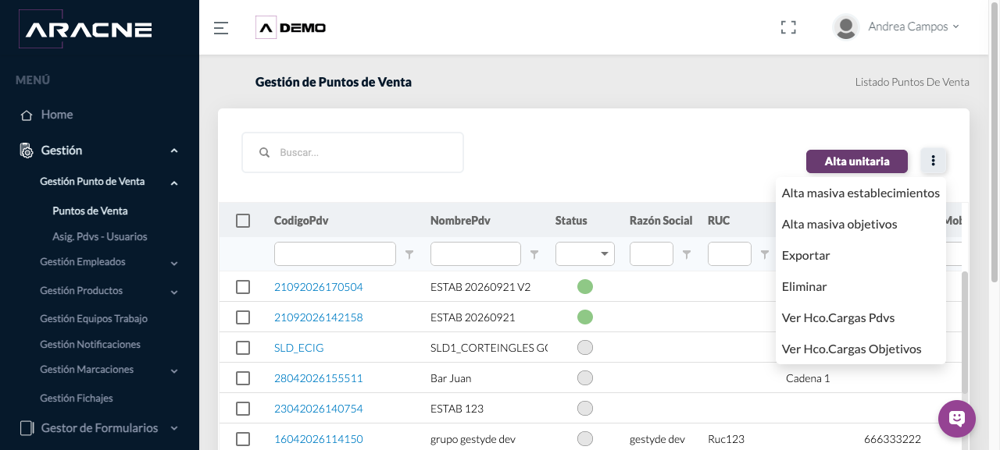
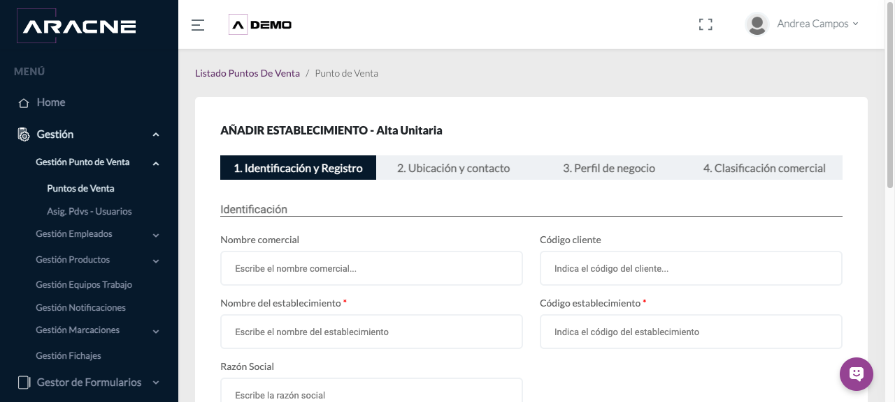
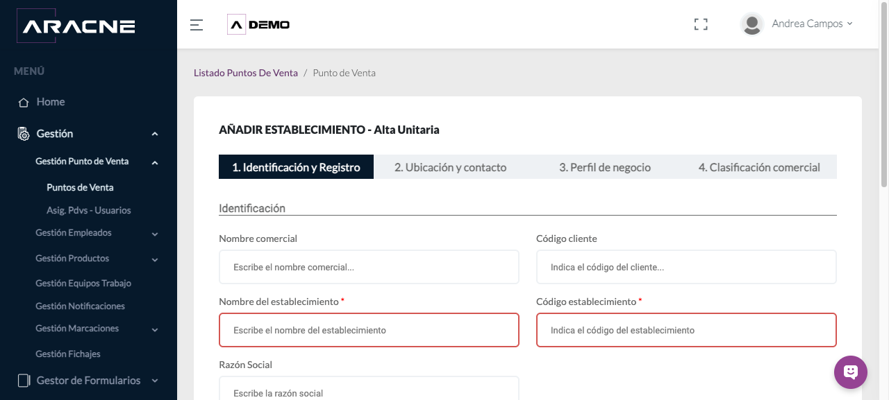
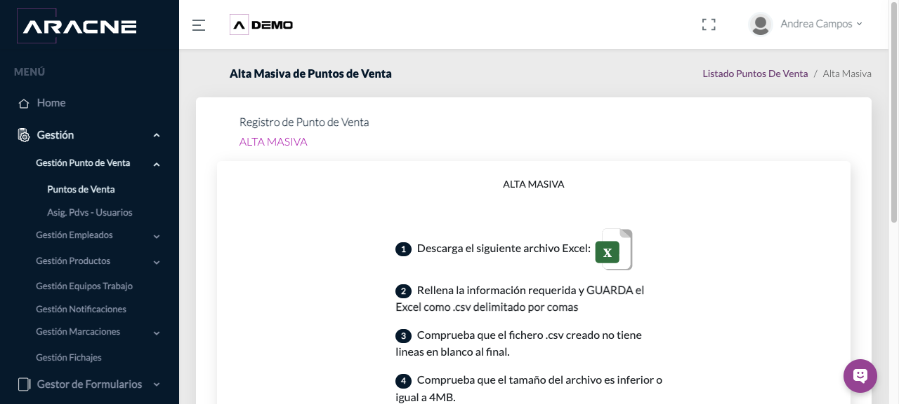

Back Office
Puntos de Venta
Consultar establecimientos y preparar altas unitarias o cargas masivas.
Requisitos
Permiso de gestión de establecimientos; catálogos comerciales configurados.
Dónde estáGestión › Gestión Punto de Venta › Puntos de Venta
Procedimiento
- Usa los filtros del listado para localizar un establecimiento.
- Para un alta individual, abre Alta unitaria y completa Identificación y Registro.
- Continúa por Ubicación y contacto, Perfil de negocio y Clasificación comercial. Los campos con asterisco son obligatorios.
- Revisa los datos y continúa hasta completar el alta.
- Para una carga masiva, descarga la plantilla, rellénala y guárdala como CSV delimitado por comas. El archivo no debe superar 4 MB ni contener líneas vacías al final.
- Selecciona Subir archivo y, al terminar, vuelve al listado para localizar los establecimientos.
Campos y controles
- Nombre del establecimiento y Código establecimiento: identifican el PDV.
- Provincia, Población, Latitud, Longitud y Distancia mínima: sitúan el establecimiento y apoyan controles de proximidad.
- Tipo de negocio, Canal PDV, Cadena y Sector/Industria: describen el perfil comercial.
- Categoría cliente, Estado operativo, Etapa, Estado, Área de influencia y Origen: clasifican el seguimiento.
- La plantilla contiene 47 columnas, desde nombreComercial hasta productoInteresado4. Respeta exactamente las cabeceras.








Resultado esperado
El establecimiento queda disponible en el listado y puede asignarse a usuarios, rutas y Formularios Avanzados.
Cómo comprobarlo
Filtra por código o nombre y comprueba los datos principales. En una carga, revisa también el histórico de cargas disponible en el menú de acciones.
Problemas habituales
- Si no aparece Continuar, completa los campos marcados con asterisco.
- Si la carga no se admite, confirma formato CSV, tamaño máximo y ausencia de filas vacías al final.
- Si un valor de catálogo no está disponible, revisa los componentes maestros antes de preparar el archivo.
Vídeos de Puntos de Venta
Altas, exportación, activación e histórico de cargas. Abrir la sección correspondiente de la videoteca.
Operaciones relacionadas
Asignación PDV–usuariosPlanificador de rutasFormularios Avanzados